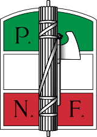
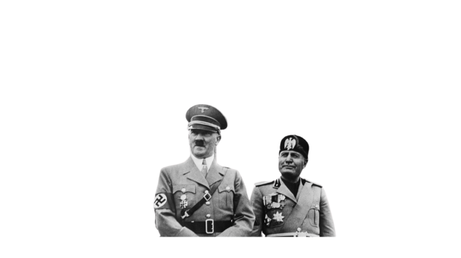
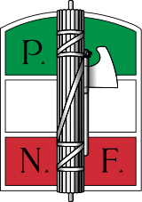
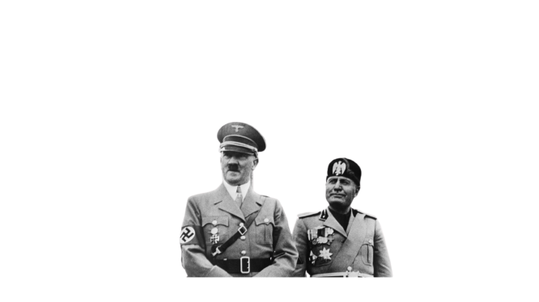
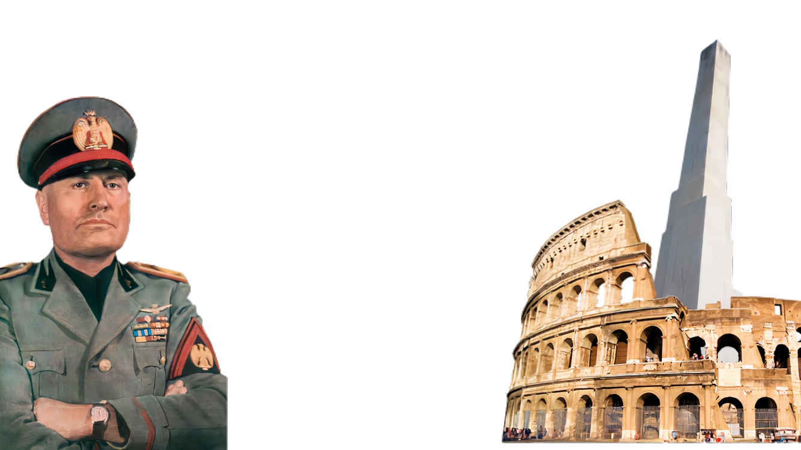
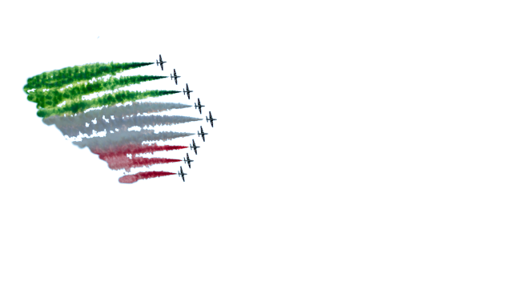
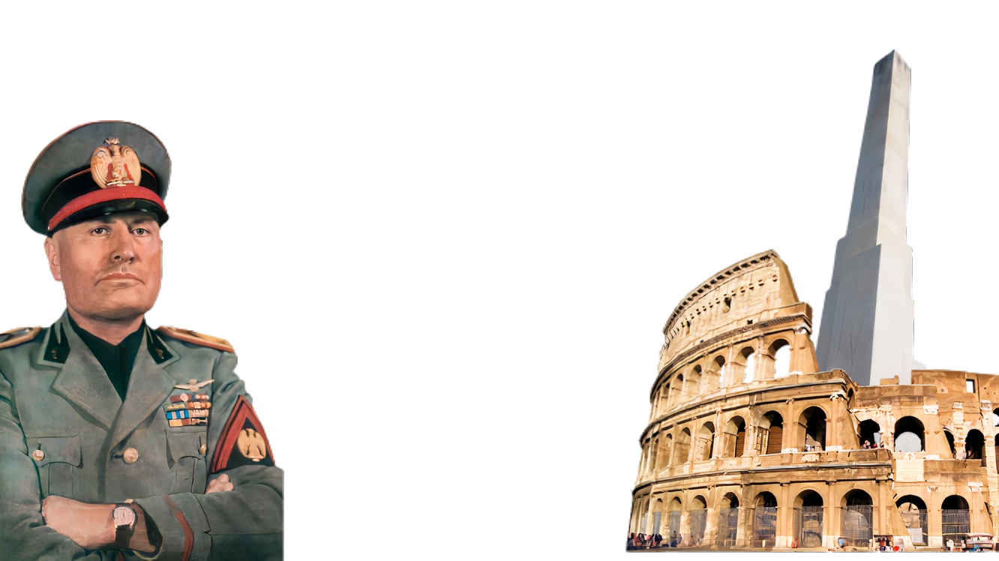
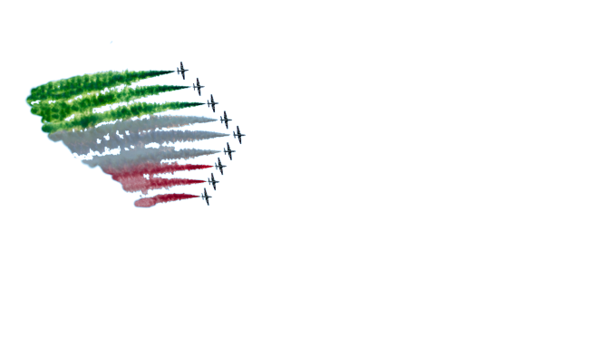

Mussolini
 



Le Fascisme Italien de Mussolini
Les mots en rouge sont des mots que vous pourrez
retrouver dans
#Vocabulaire
Dans le tableau, si la case est soulignée, cela signifie que la case est interactive.
Attention, toutes les images ne sont pas forcément contractuelles
| Idéologie du regime fasciste |
|
| Un regime : des symboles |
|
| Les acteurs principaux du fascisme |
| Fondé le 9 novembre 1921 par Benito Mussolini |
Directement, le fascisme de Mussolini reçoit plusieurs soutiens d’artistes tels que Gabriele D'Annunzio, Filippo Tommaso Marinetti |
B. Mussolini s’est vu propulsé aux pouvoirs par des hommes d’états : Giovanni Giolitti, présidents du conseil à 5 reprises, Ivanoe Bonomi, ministre de la Guerre (1920-21) |
|
| Une propagande très présente |
|
| Les opposants et la répression |
|
| L'Italie: un pays présent a l'internationnal |
|
| Les expensions territorials de l'Italie |
|
| La vie du regime |
|
| Les cibles et les victimes du regime fasciste |
|
| L'économie mis en place par le fascisme |
|
| La culture du fascisme |
|